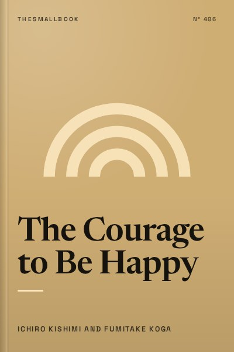

Library › Psychology & People
The Courage to Be Happy - Summary & Key Lessons

Adlerian psychology argues that freedom grows when we stop living to meet other people’s expectations and take responsibility for our own tasks.
📖 OPEN THE FULL INTERACTIVE BREAKDOWN →🌐 Read it in Hindi, Hinglish, Gujarati, Tamil & 22 more languages, with audio.
💡 The Big Idea
Adlerian psychology argues that freedom grows when we stop living to meet other people’s expectations and take responsibility for our own tasks. The lessons below are designed to be used slowly: read one, try it in a real situation, and return with evidence rather than agreement.
🧠 The 8 Key Lessons
Lesson 1: Start With the Central Claim
Chapter 1: Start With the Central Claim
Adlerian psychology argues that freedom grows when we stop living to meet other people’s expectations and take responsibility for our own tasks. Adlerian psychology argues that freedom grows when we stop living to meet other people’s expectations and take responsibility for our own tasks. The useful question is not whether this is perfectly true in every situation, but what it helps you notice before you act. Most people skip this step because the visible task feels urgent. The book asks you to slow down long enough to identify the constraint, trade-off or relationship underneath the task. Once that is clear, a smaller and more reliable move becomes possible. Repeated over time, that move changes the system rather than merely decorating the surface of it.
📖 Example: A reader tests the idea against one recent decision instead of accepting it because the title sounds convincing. The point is not to copy the situation exactly. Notice the sequence: make the hidden condition visible, choose the next action that respects it, and then observe what happens. That turns a memorable story into a testable practice instead of a slogan. Read the full example →
⚡ Do this: Write the central claim in your own words and one place it might apply.
Lesson 2: Find the Hidden Assumption
Chapter 2: Find the Hidden Assumption
Every strong argument depends on conditions that can be named and examined. Adlerian psychology argues that freedom grows when we stop living to meet other people’s expectations and take responsibility for our own tasks. The useful question is not whether this is perfectly true in every situation, but what it helps you notice before you act. Most people skip this step because the visible task feels urgent. The book asks you to slow down long enough to identify the constraint, trade-off or relationship underneath the task. Once that is clear, a smaller and more reliable move becomes possible. Repeated over time, that move changes the system rather than merely decorating the surface of it.
📖 Example: A team discovers that its “obvious” plan assumes customers have time they do not actually have. The point is not to copy the situation exactly. Notice the sequence: make the hidden condition visible, choose the next action that respects it, and then observe what happens. That turns a memorable story into a testable practice instead of a slogan. Read the full example →
⚡ Do this: List one assumption behind a current plan and find one way to test it.
Lesson 3: Use the Outside View
Chapter 3: Use the Outside View
Compare a situation with similar cases before trusting a personal story. Adlerian psychology argues that freedom grows when we stop living to meet other people’s expectations and take responsibility for our own tasks. The useful question is not whether this is perfectly true in every situation, but what it helps you notice before you act. Most people skip this step because the visible task feels urgent. The book asks you to slow down long enough to identify the constraint, trade-off or relationship underneath the task. Once that is clear, a smaller and more reliable move becomes possible. Repeated over time, that move changes the system rather than merely decorating the surface of it.
📖 Example: A founder looks at outcomes from comparable launches rather than relying only on enthusiasm in the room. The point is not to copy the situation exactly. Notice the sequence: make the hidden condition visible, choose the next action that respects it, and then observe what happens. That turns a memorable story into a testable practice instead of a slogan. Read the full example →
⚡ Do this: Find one comparable case before making a high-stakes estimate.
Lesson 4: Turn Theory Into a Small Test
Chapter 4: Turn Theory Into a Small Test
A principle becomes useful only when it changes behaviour in a situation with feedback. Adlerian psychology argues that freedom grows when we stop living to meet other people’s expectations and take responsibility for our own tasks. The useful question is not whether this is perfectly true in every situation, but what it helps you notice before you act. Most people skip this step because the visible task feels urgent. The book asks you to slow down long enough to identify the constraint, trade-off or relationship underneath the task. Once that is clear, a smaller and more reliable move becomes possible. Repeated over time, that move changes the system rather than merely decorating the surface of it.
📖 Example: A learner runs a one-week version of a new routine before rebuilding their whole timetable. The point is not to copy the situation exactly. Notice the sequence: make the hidden condition visible, choose the next action that respects it, and then observe what happens. That turns a memorable story into a testable practice instead of a slogan. Read the full example →
⚡ Do this: Design a seven-day experiment with one clear measure.
Lesson 5: Notice the Trade-Off
Chapter 5: Notice the Trade-Off
Every gain has a cost in money, time, attention or opportunity. Adlerian psychology argues that freedom grows when we stop living to meet other people’s expectations and take responsibility for our own tasks. The useful question is not whether this is perfectly true in every situation, but what it helps you notice before you act. Most people skip this step because the visible task feels urgent. The book asks you to slow down long enough to identify the constraint, trade-off or relationship underneath the task. Once that is clear, a smaller and more reliable move becomes possible. Repeated over time, that move changes the system rather than merely decorating the surface of it.
📖 Example: A family chooses a slower option after seeing that a faster one would increase stress for everyone. The point is not to copy the situation exactly. Notice the sequence: make the hidden condition visible, choose the next action that respects it, and then observe what happens. That turns a memorable story into a testable practice instead of a slogan. Read the full example →
⚡ Do this: For one choice, write the benefit and the cost that is easiest to ignore.
Lesson 6: Use Other People as Reality Checks
Chapter 6: Use Other People as Reality Checks
Good conversations expose blind spots without handing away responsibility. Adlerian psychology argues that freedom grows when we stop living to meet other people’s expectations and take responsibility for our own tasks. The useful question is not whether this is perfectly true in every situation, but what it helps you notice before you act. Most people skip this step because the visible task feels urgent. The book asks you to slow down long enough to identify the constraint, trade-off or relationship underneath the task. Once that is clear, a smaller and more reliable move becomes possible. Repeated over time, that move changes the system rather than merely decorating the surface of it.
📖 Example: A manager asks a sceptical colleague to challenge a proposal before it becomes expensive to reverse. The point is not to copy the situation exactly. Notice the sequence: make the hidden condition visible, choose the next action that respects it, and then observe what happens. That turns a memorable story into a testable practice instead of a slogan. Read the full example →
⚡ Do this: Ask one person to name the strongest objection to your current thinking.
Lesson 7: Build a Repeatable System
Chapter 7: Build a Repeatable System
One inspired day is not the same as a process that works under ordinary conditions. Adlerian psychology argues that freedom grows when we stop living to meet other people’s expectations and take responsibility for our own tasks. The useful question is not whether this is perfectly true in every situation, but what it helps you notice before you act. Most people skip this step because the visible task feels urgent. The book asks you to slow down long enough to identify the constraint, trade-off or relationship underneath the task. Once that is clear, a smaller and more reliable move becomes possible. Repeated over time, that move changes the system rather than merely decorating the surface of it.
📖 Example: A student turns a useful study trick into a calendar cue and a short checklist. The point is not to copy the situation exactly. Notice the sequence: make the hidden condition visible, choose the next action that respects it, and then observe what happens. That turns a memorable story into a testable practice instead of a slogan. Read the full example →
⚡ Do this: Make the next helpful action easier to repeat than to forget.
Lesson 8: Review Without Defending
Chapter 8: Review Without Defending
Learning accelerates when evidence can change your method without becoming a verdict on you. Adlerian psychology argues that freedom grows when we stop living to meet other people’s expectations and take responsibility for our own tasks. The useful question is not whether this is perfectly true in every situation, but what it helps you notice before you act. Most people skip this step because the visible task feels urgent. The book asks you to slow down long enough to identify the constraint, trade-off or relationship underneath the task. Once that is clear, a smaller and more reliable move becomes possible. Repeated over time, that move changes the system rather than merely decorating the surface of it.
📖 Example: After a disappointing result, a team separates what it controlled from what it merely hoped would happen. The point is not to copy the situation exactly. Notice the sequence: make the hidden condition visible, choose the next action that respects it, and then observe what happens. That turns a memorable story into a testable practice instead of a slogan. Read the full example →
⚡ Do this: At week’s end, name one thing to keep, one to change and one thing still unknown.
✅ 5-Step Action Plan
- Write the central claim in your own words and one place it might apply.
- List one assumption behind a current plan and find one way to test it.
- Find one comparable case before making a high-stakes estimate.
- Design a seven-day experiment with one clear measure.
- For one choice, write the benefit and the cost that is easiest to ignore.
⚠️ When This Doesn't Work
This summary is a guide to the book’s main lens, not a substitute for the full work or professional advice. Some examples, cultural assumptions and research claims may need updating or may not transfer directly to Indian conditions. Read critically, especially where money, health, law or safety is involved.
💀 The Graveyard Proves It
💬 Best Quotes from The Courage to Be Happy
- “Adlerian psychology argues that freedom grows when we stop living to meet other people’s expectations and take responsibility for our own tasks.”
- “Evidence earns more trust than confidence.”
- “A small experiment is a respectful way to disagree with yourself.”
Interactive version: mark lessons as read, listen in your language, share quote cards.